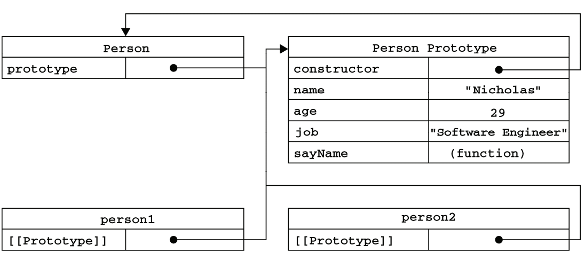
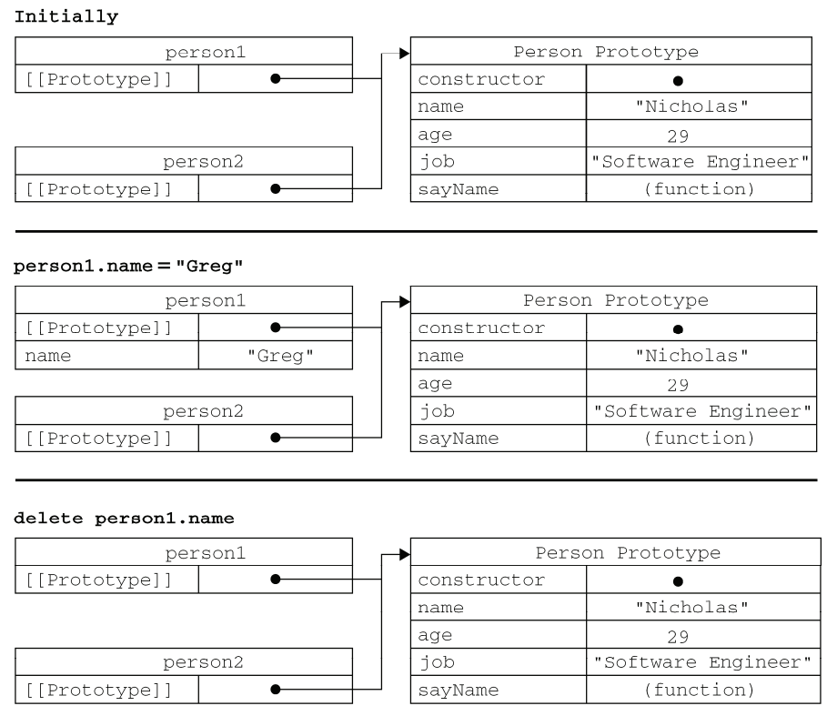
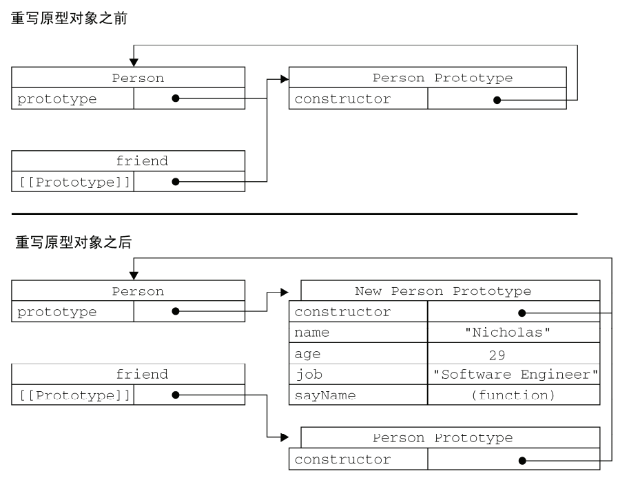

JavaScript 创建对象方法总结
这两天仔细看了《JavaScript高级程序设计》的第六章，面向对象程序设计。觉得需要整理一下阅读笔记来加深印象，也方便以后复习。
ECMA-262 把对象定义为：“无序属性的集合，其属性可以包含基本值、对象或函数”。简单来说可以把它理解成散列表，无非就是 key - value。
创建对象有很多种方法，最常用的是构造函数模式和原型模式。
构造函数模式
ECMAScript 中的构造函数可以用来创建特定类型的对象。例如：
function Person(name,age){
this.name = name;
this.age = age;
this.sayName = function(){
console.log(this.name);
};
}
var p1 = new Person("lqq",22);
var p2 = new Person("sbb",23);
要创建Person的新实例，必须使用 new 操作符。p1和p2分别保存着一个Person的不同实例。这两个对象都有一个constructor属性，都指向Person，如下所示：
console.log(p1.constructor==Person); //true
console.log(p2.constructor==Person); //true
但是不同实例的同名函数不相等，以下代码可以证实这一点：
console.log(p1.sayName==p2.sayName); //false
然而，创建两个完成同样任务的Function实例着实没有必要，大可以像下面这样，把函数定义转移到构造函数外部。
function Person(name,age){
this.sayName = sayName;
}
function sayName (){
console.log(this.name);
}
console.log(p1.sayName==p2.sayName); //true
此外，值得注意的是，在全局作用域中调用一个函数，this指向Global对象(浏览器中是window对象)。
原型模式
我们创建的每个函数都有一个prototype属性，这个属性是一个指针，指向一个包含由特定类型的所有实例共享的属性和方法。从字面意思理解，prototype就是通过调用构造函数创建的实例对象的原型对象，如下面的例子所示。
function Person(){
}
Person.prototype.name="Nicholas";
Person.prototype.age=29;
Person.prototype.job="Software Engineer";
Person.prototype.sayName = function(){
console.log(this.name);
}
var person1 = new Person();
person1.sayName(); //Nicholas
var person2 = new Person();
person2.sayName(); //Nicholas
构造函数变成了空函数。新对象的所有属性和方法由所有实例共享，即p1和p2访问的是同一组属性的同一个sayName函数，如下所示。
console.log(person1.sayName==person2.sayName); //true
-
理解原型对象
只要创建了一个新函数，就会根据一组特定的规则为该函数创建一个 prototype 属性，这个属性指向函数的原型对象。以前面的为例，下图展示了Person构造函数、Person的原型属性和现有的两个实例之间的关系。
Person.prototype指向了原型对象，Person.prototype.constructor又指回了Person构造函数。Person的每个实例都包含一个内部属性，该属性仅仅指向了Person.prototype。换句话说，他们和构造函数没有直接关系。
下面介绍多个实例共享属性的基本原理。每当代码读取某个对象的某个属性时，都会执行一次搜索，目标是具有给定名字的属性。搜索首先从对象实例本身开始。如果在实例中找到了具有给定名字的属性，则返回该属性的值；如果没有找到，则继续搜索指针指向的原型对象，在原型对象中查找具有给定名字的属性。如果在原型对象中找到了这个属性，则返回该属性的值。在我们调用person1.sayName()时，会先后执行两次搜索。第一次在实例属性中搜索，没有搜索到就去原型属性搜索。
因此，当为某个实例对象添加一个属性时，这个属性就会屏蔽原型对象中保存的同名属性，但不会修改它。此时使用delete操作符可以删除实例属性，使我们可以访问原型中的属性。
person1.name = "Greg"; console.log(person1.name); //Greg delete person1.name; console.log(person1.name); //Nicholas使用hasOwnProperty()可以检测一个属性是存在于实例中，还是原型中。只有给定属性存在于实例中，才会返回true。
person1.name = "Greg"; console.log(person1.hasOwnProperty("name")); //true delete person1.name; console.log(person1.hasOwnProperty("name")); //false下表展示了上面例子在不同情况下的实现与原型的关系。
 -
原型与in操作符
单独使用时，in操作符会在对象能够访问给定属性时返回true，不论该属性在实例中还是原型中。in与hasOwnProperty()函数一起使用就可以判断属性在实例中还是原型中。
在使用 for-in循环时，返回的是所有能够通过对象访问的、可枚举的（enumerated）属性。
-
更简单的原型语法
可以直接把原型属性写成 key-value 的形式，如下面的例子所示。
Person.prototype = { name:"Nicholas", age:29, job:"Software Engineer", sayName:function(){ console.log(this.name); } };这种写法与上面结果相同，但有一个例外：constructor属性不再指向Person了，而是指向新对象的 constructor 属性(Object)。可以手动添加使得onstructor属性重新指向指向Person。
-
原型的动态性
随时为原型添加属性都能在实例中反映出来，例如：
Person.prototype.weight = 43; Person.prototype.sayWeight = function(){ console.log(this.weight); }; person1.sayWeight(); //43然而，如果重写整个原型对象，情况就不一样了。调用构造函数时会为实例添加一个指向最初原型的[[Prototype]]指针，而把原型修改为另外一个对象就等于切断了构造函数与最初原型之间的联系。看下面的例子。
function Good(){ } var person = new Good(); Good.prototype = { friends:["lqq","lx"], name:"bff", sayName:function(){ console.log(this.name); } }; person.sayName(); //error调用person.sayName()时发生了错误，因为person指向的原型中没有以该对象命名的属性。下图解释了这个过程。
 -
原型对象的问题
原型对象的最大问题是其共享的本质所导致的。这种共享对于函数非常合适，但是对于引用类型值得属性而言，就非常危险了。来看下面的例子。
var person1 = new Good(); var person2 = new Good(); person1.friends.push("lxc"); console.log(person1.friends); //'lqq', 'lx', 'lxc' console.log(person2.friends); //'lqq', 'lx', 'lxc'引用类型而言，在一个实例上改变某个属性值会篡改所有实例的该属性值。
组合使用构造函数模式和原型模式
构造函数模式用于定义实例属性，原型模式用于定义方法和共享的属性。其结果是每个实例都有一份实例属性的副本，同时共享对方法的引用，最大限度地节省了内存。下面的代码重写了前面的例子。
function Person(name,age,job){
this.name = name;
this.age = age;
this.job = job;
}
Person.prototype = {
constructor: Person,
sayName:function(){
console.log(this.name);
}
};